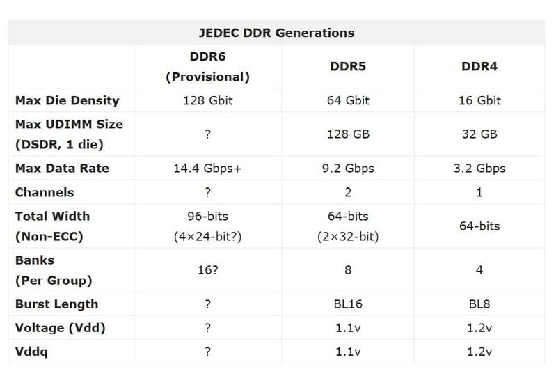

過去 26 小時共 4 則貼文，主題有兩個：一是 Alinea Analytics 估算 GTA 6 首個週末的銷量，二是 JEDEC 預告的 DDR6 記憶體規格（文字加一張規格比較表）。另一則 YouTube 連結查不到內容。
附註：今天的 Gooaye Fetch 12:21 才完成，晚於原本 11:30 排程的等待時間，所以這封是補跑的。
https://alineaanalytics.substack.com/p/gta-6-sells-449m-copies-makes-40b
講解
貼文只有連結。來源是遊戲數據公司 Alinea Analytics 的電子報，它估計 GTA 6 從發售日到首個週末（11/19–22 這四天）已實際售出約 4,490 萬套，營收超過 40 億美元。平台分布是 PS5 約 3,370 萬套（75%，營收約 30 億美元）、Xbox 約 1,120 萬套（25%），大約等於這兩個平台各自裝機量的三成。11/22 單日活躍玩家估計約 4,080 萬。
讀數字時要注意幾點：
拿來對照：發售前 Piper Sandler 預估首日約 4,500 萬套，Alinea 自己先前預估首週 3,700–5,100 萬套，所以 4,490 萬落在原本預期的區間內。對投資人來說，關鍵在 Take-Two（TTWO）下一季財報認列的金額，以及 Sony 的通路抽成能否帶動 PlayStation 部門的營收。
貼文只有一支 YouTube 影片連結，沒有附任何說明。用搜尋查不到這支影片的標題或內容（沙盒也無法直接開 YouTube），所以沒有講解，請自行點開觀看。
DDR6 升級提高資料傳輸速率，匯流排由 64-bit 擴展至 96-bit，並導入長度約 74 mm 的緊湊型記憶體模組，相較傳統約 133 mm 的 DIMM 縮短約 44%
結合更高的傳輸速率與更寬的資料介面，DDR6-14400 的單條模組理論峰值頻寬可達 172.8 GB/s，約為 DDR5-9200 的 2.35 倍。整體設計方向，是同步提升伺服器記憶體的頻寬、容量擴充能力與實體配置密度，以因應高通道數平台與資料密集型工作負載的需求

圖片是一張「JEDEC DDR Generations」比較表，列出 DDR6（暫定）、DDR5、DDR4：單顆晶粒最大容量 128 / 64 / 16 Gbit，最高傳輸率 14.4 Gbps 以上 / 9.2 / 3.2 Gbps，總位寬 96-bit（可能是 4×24-bit）/ 64-bit（2×32）/ 64-bit，每組 bank 數 16? / 8 / 4。DDR6 的通道數、模組容量、burst length 和電壓都還標著「?」。
講解
JEDEC 是制定 DRAM 標準的產業組織，11/18 發布了 DDR6 的「預覽」。記憶體頻寬約等於「每根資料線的速率 × 資料線數量」。DDR6 兩邊同時加：速率起步是 12.8 GT/s（RDIMM），路線圖延伸到 14.4 GT/s 以上；資料線從 64 條增加到 96 條。貼文的 2.35 倍算法沒有錯：14.4 Gbps × 96 ÷ 8 = 172.8 GB/s，DDR5-9200 是 9.2 × 64 ÷ 8 = 73.6 GB/s。
不過要看清楚比較的基準：2.35 倍是拿 DDR6 路線圖上的高速版去比 DDR5 的最高速。如果用 DDR6 起步的 12.8 GT/s 計算，約為 153.6 GB/s，是 DDR5-9200 的 2.1 倍。JEDEC 官方說法也比較保守，只寫「推出時頻寬提升超過 50%」，並強調這是記憶體頻寬目標，不等於應用效能會等比例提升。
模組從 133 mm 縮短到 74 mm，加上 128 Gb 大晶粒、bank 數加倍和 pseudo-channel 架構，目的都是讓伺服器在同一塊主機板上塞進更多通道與容量，對應 AI 和資料中心那種「CPU 核心數越來越多，但每核心分到的記憶體頻寬不夠」的問題。
限制：JEDEC 明講這些是「開發計畫而非定案標準，可能變動」，也沒有給正式發布時間，所以圖表裡 DDR6 一欄才會有很多「?」。產品化通常比標準定案再晚一到兩年。投資上相關的是 DRAM 三大廠（三星、SK 海力士、美光）、記憶體介面晶片（瀾起、Rambus、Renesas），以及伺服器平台的換代時程，但距離實際貢獻營收還早。